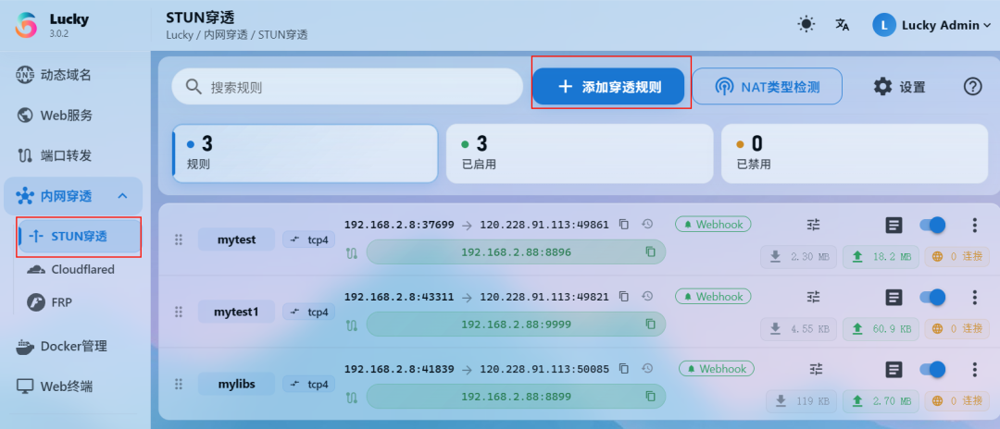
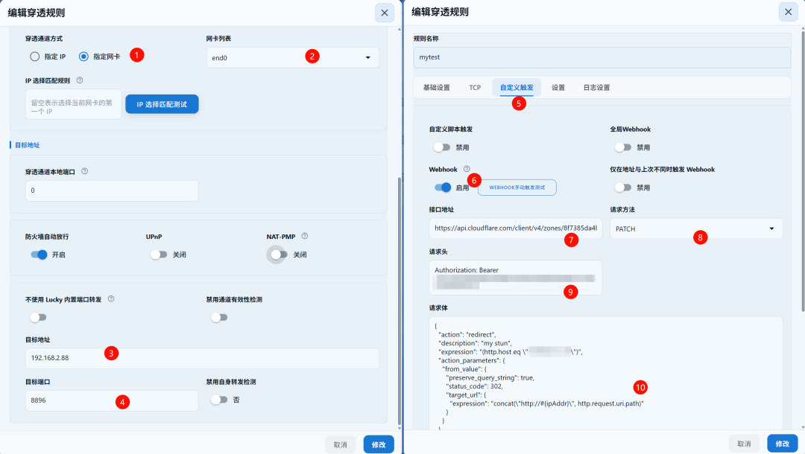
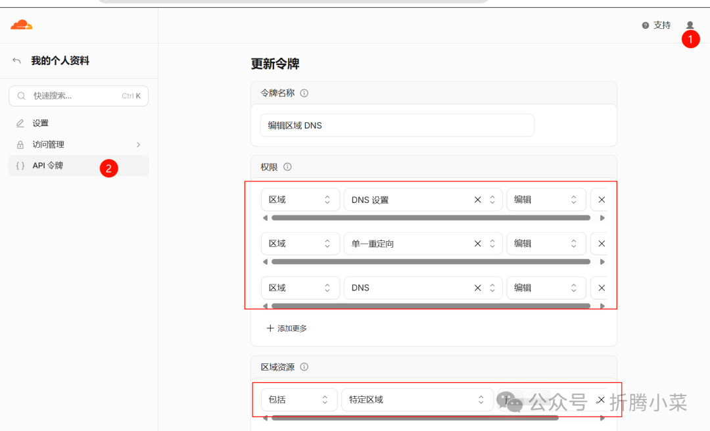
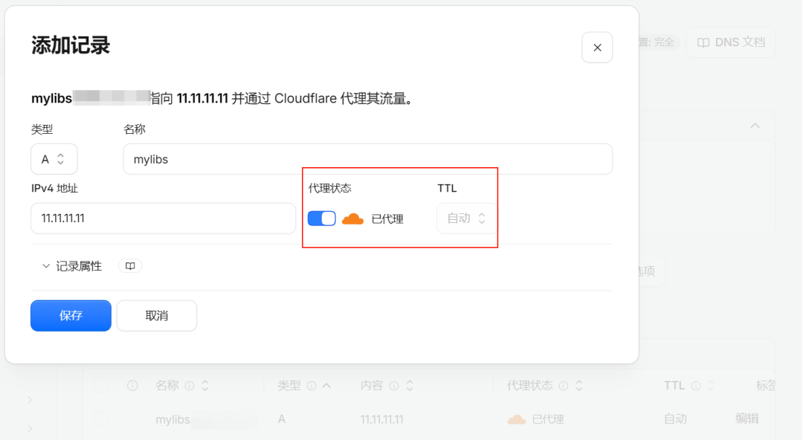
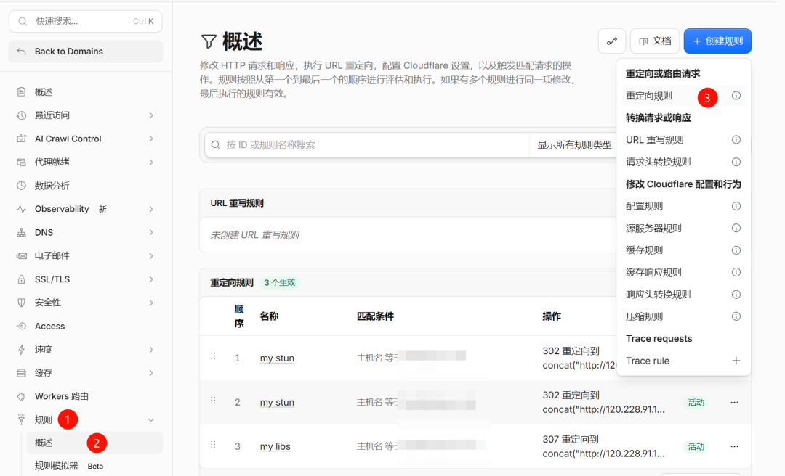
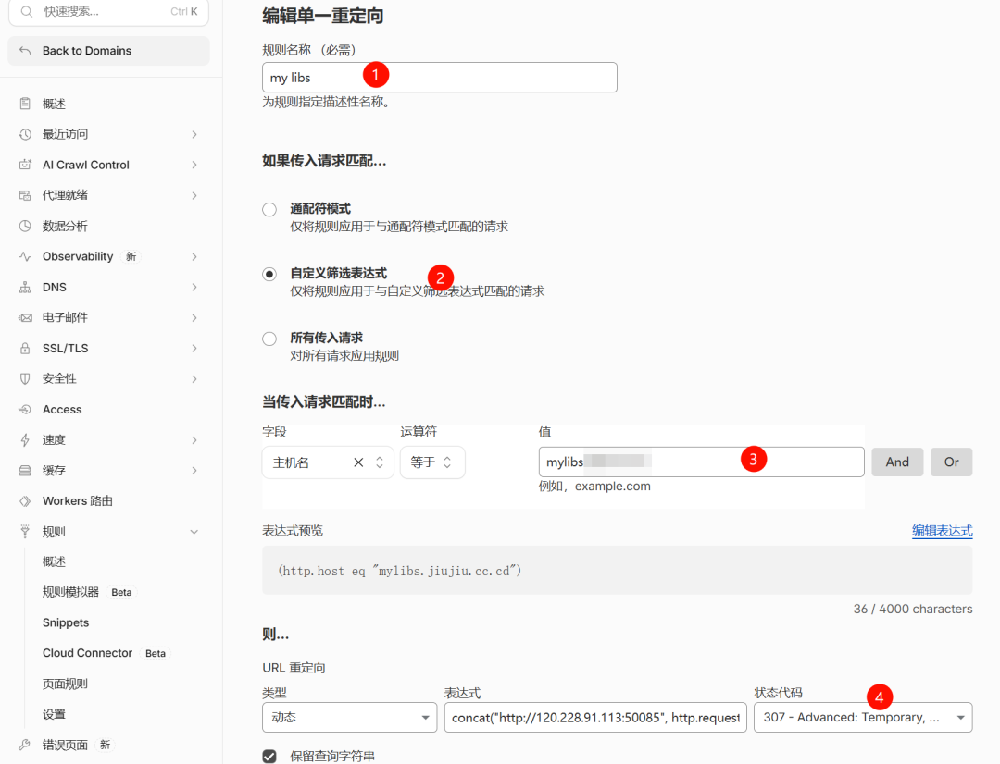
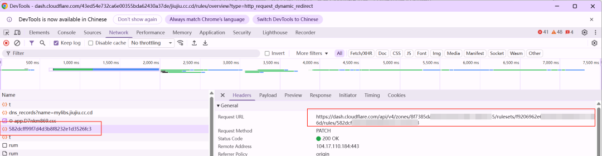

lucky硬核功能太多了，上一篇只介绍了怎么安装，以及一些安全配置，动态域名以及SSL证书。今天我们了解下STUN穿透，无需公网IP也能榨干家庭带宽。通过webhook自动绑定CF域名解析，以便通过域名固定访问地址。
特别是那些无法获取到公网IP以及不想折腾的友友们。
该方案有一定的局限性，不适合APP访问的服务。
此次主要了解下STUN穿透功能。
需要cloudflare和frp的朋友可以参考前期的文章
1. cloudflare
太强了！0 元实现 HTTPS 加密内网穿透，随时随地安全访问内网，保姆教程看完就会
2. frp
神马？没有公网IP？借朋友的就够了！（99%的人不知道），旧安装手机也能带你飞
3. STUN穿透
当然STUN穿透也有一定的局限性，以下为STUN的局限性及优势。
✅ 优点






https://api.cloudflare.com/client/v4/zones/8f738aaaaaaaaaa/rulesets/f92069aaaaaaaaaa/rules/164de93aaaaaaaaaa，需要填入步骤⑦

Authorization: Bearer 替换为CFToken
{
"action": "redirect",
"description": "my stun",
"expression": "(http.host eq \"子域名记录\")",
"action_parameters": {
"from_value": {
"preserve_query_string": true,
"status_code": 307,
"target_url": {
"expression": "concat(\"http://#{ipAddr}\", http.request.uri.path)"
}
}
}
}
摄像头云存储太贵？家用NAS实现7 天滚动自由，一年省个 VIP
亲测有效！硬核改造，旧手机秒变Ubuntu Touch系统，低成本搭建个人Linux服务器，Docker服务器
如果这篇内容刚好帮到你，建议先点个收藏，避免以后用的时候找不到。如果你也在折腾这些实用的小工具，欢迎关注「折腾小菜」，后面会持续更新：
💡 免责声明：
本文内容仅供个人学习与技术研究使用，不得用于任何商业用途或非法用途。相关部署与使用请遵守当地法律法规及平台规则。